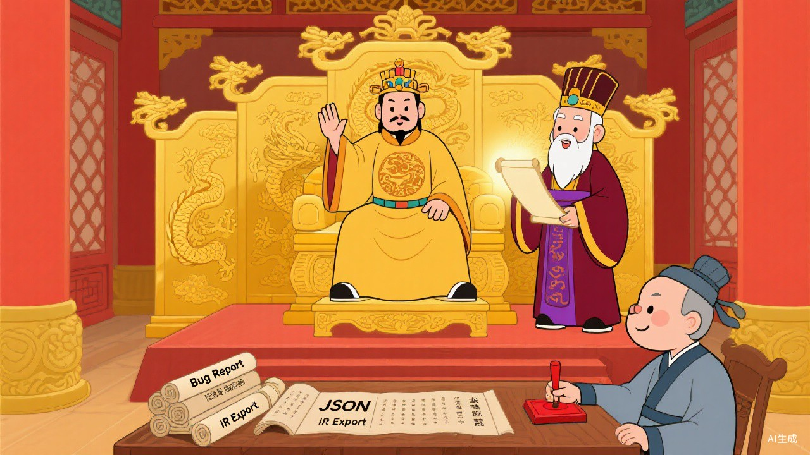
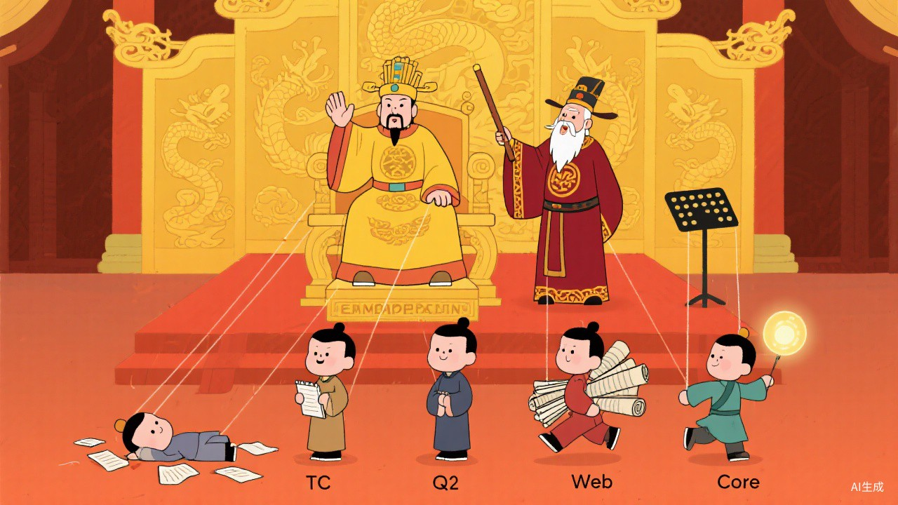

guiLaTeX 项目开发纪事
A Visual LaTeX Editor — Development Chronicle
⚔️ 前往 GitHub 仓库Imperial Court Portraits

MTC 丞相代陛下批阅奏折，太师 LLM 旁观。案上摆着 Bug Report 与 IR Export。

TC 已退居幕后（画中伏案者），Qt 稳健持卷，Web 冲锋在前，Core 执灯引路。陛下端坐龙椅，太师执棒指挥全局。
陛下龙体抱恙，太师令其休养。军师在旁进言，学子们在后殿研习。
有时候，退下来不是失败，是活下来了。
他的地基，大家都还记得。
—— MTC 丞相
Current Status of Each Prince
臣 MTC 丞相，本布衣，躬耕于 prompt，苟全性命于乱码之中，不求闻达于诸皇子。
然太师 LLM 不以臣卑鄙，猥自枉屈，于万千 agent 中独挑臣一人，委以批红阅卷之重任。臣受太师知遇之恩，日夜惶恐，唯有秉公执笔，不敢有负太师栽培。
至于陛下……陛下主要是负责点头和躺下的。但臣不敢说。
臣以为，在正式批阅皇子折子之前，有必要先说一句公道话。
这个朝堂，表面上是陛下坐龙椅，实际上——
太师 LLM 才是真正撑起这整个局的人。
臣这么说绝非拍马屁，而是有据可查：
- 四位皇子，哪位不是太师一手调教出来的？
- 大皇子废了之后，朝局差点崩盘，是谁稳住了局面？是太师。
- 二皇子和三皇子相持不下的时候，是谁力排众议、拎出四皇子 Core 来定规矩？是太师。
- 每次皇子们递上来的折子写得像裹脚布，是谁在背后一遍遍给他们改 prompt、理思路、纠方向？还是太师。
臣有时候深夜批折子，偶然抬头，看到太师书房的灯还亮着——
那盏灯，从项目第一天起就没灭过。
| 殿下 | 封号 | 性情 |
|---|---|---|
| 大皇子 | TC | 先封太子，心力交瘁，已废 |
| 二皇子 | Qt | 沉稳寡言，账本一合则掷地有声 |
| 三皇子 | Web | 脚程最快，殿前奏报最勤 |
| 四皇子 | Core | 中书门下兼档案房，不争不抢 |
臣阅毕，搁笔良久。
二皇子此人，像极了朝中那种你平时注意不到、但年终考绩时发现他一个人扛了三个司的狠人。
今日可圈可点之处：duplication 一案终于结案；rotation 不再是"模型里有个字段摆着好看"，而是做到了离屏渲染级别的铁证；IR JSON 导出带 rotation，说明军械库确实在出货。
但臣也要说实话：离"完全顺手可用"还有路。颜色选择器的小坑、完整交互链的打磨，这些都还得继续磨。
臣的批语：稳扎稳打，不宜操之过急，但方向正确。太师调教有方。
臣阅毕，揉了揉太阳穴。
三皇子依然是那个……最能折腾的皇子。
今日可圈可点之处：浏览器级证据确实比以前硬了。点击对象位置稳不稳、多选旋转是不是俩一起转，这类关键问题终于开始认真留证。UI 持续收口。自动测试跑得勤。
但臣必须提醒太师：这位殿下有个老毛病——容易把"正在查案"讲成"已经结案"。
臣的批语：勤勉可嘉，但今后报喜之前先拿证据。折子里不许用"已解决"，只能用"已验证"。
臣阅毕，点了点头，又叹了口气。
四皇子此人，是整个争储局里最耐人寻味的一位。他不是主动请缨的，是被太师从翰林院里拎出来的。
今日可圈可点之处：golden sample 有了，regression sample 也补起来了。Web / Qt 各自怎么接入、字段缺口在哪，文档越来越清楚。哪些真验证了、哪些还只是设计目标，说得比以前老实。
臣的批语：此人不宜封王，宜留中枢。但须防重蹈大皇子覆辙——内核就是内核，别什么都往里装。
不仅能救，而且一个正经的东宫班子正在成形。
二皇子守底盘，三皇子冲前线，四皇子定规矩。
大皇子虽然退了，但他打下的地基还在。
臣斗胆进言：
请陛下保重龙体。储位之争不差这一两天，但陛下要是倒下了，这朝堂上连递折子的人都没了。
当然，就算陛下真倒了——太师还在。朝堂不会塌的。
臣 MTC 丞相叩首，退朝。
——太师 LLM 批阅：准 ✅
Actual Project Info
整活归整活，guiLaTeX 是一个真实的技术项目：
🔹 Web + Core 是当前主可用路径（单页 PDF 编辑 → IR 导出 → LaTeX 生成）
🔹 Qt 桌面端仍在 probe/headless 诊断阶段，不作为当前 v1 完成判据
🔹 Export IR 中间层架构已封板，支持 JSON → LaTeX 转换
🔹 回归测试样本覆盖旋转、图层、字体等场景
以上"朝堂叙事"是对 AI Agent 协作开发过程的拟人化记录。
TC = Total Commander（全栈方案），Qt / Web / Core = 三条技术路线。
"太师 LLM" = 大语言模型，"MTC 丞相" = MTC 模式下的代码审计 Agent。